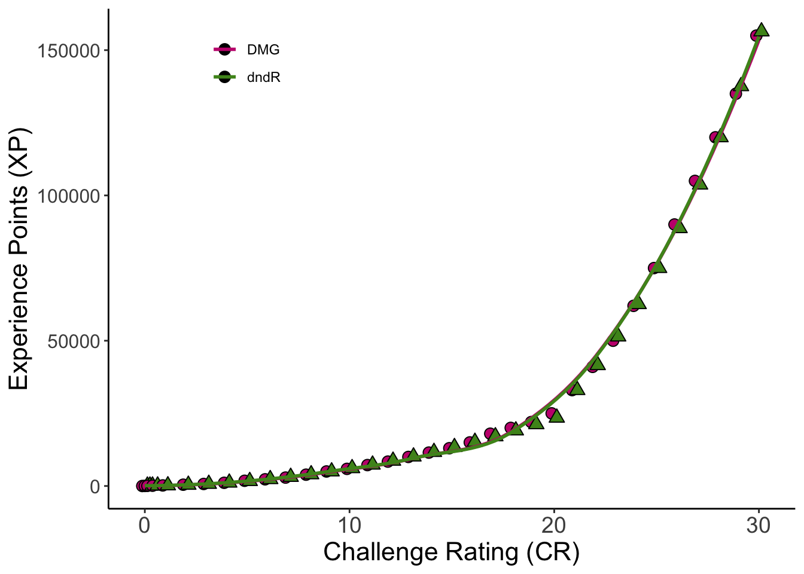

dndR::monster_stats(cr = 7) Challenge DMG_XP Prof_Bonus Armor_Class HP_Range HP_Average Attack_Bonus
1 7 2900 3 15 161-175 168 6
Save_DC
1 15
Creatures that you create (or “homebrew”) can be a great way to add flavor to an encounter or can even form the centerpiece of a larger campaign arc! dndR’s monster_stats and monster_creator functions can help DMs to quickly stat out their custom monsters
The DMG provides a table (see p. 274) that gives the vital statistics of creatures based on their Challenge Rating (CR) but this table can be cumbersome to compare to Experience Points (you know, the things used to determine how hard an encounter will be for your party?).
monster_stats streamlines this process by allowing you to either
xp_cost)OR
Once either XP or CR is provided, monster_stats returns the creature’s statistics as they appear in the DMG for a single creature of that difficulty.
dndR::monster_stats(cr = 7) Challenge DMG_XP Prof_Bonus Armor_Class HP_Range HP_Average Attack_Bonus
1 7 2900 3 15 161-175 168 6
Save_DC
1 15Challenge Rating is more than a little esoteric so feel free to ignore that argument entirely if XP is more comfortable for you! Note that XP is rounded down to the nearest specified monster “tier” specified in the DMG.
dndR::monster_stats(xp = 8000) Challenge DMG_XP Prof_Bonus Armor_Class HP_Range HP_Average Attack_Bonus
1 11 7200 4 17 221-235 228 8
Save_DC
1 17If you specify both CR and XP, the function prints a warning and proceeds only with CR (i.e., ignoring whatever you put in as XP). I figured if a user is confident enough to put CR at all it should be given priority but am happy to tweak this if desired!
dndR::monster_stats(xp = 1000, cr = 4)CR and XP both specified, proceeding with CR Challenge DMG_XP Prof_Bonus Armor_Class HP_Range HP_Average Attack_Bonus
1 4 1100 2 14 116-130 123 5
Save_DC
1 14If you’d rather take a more individualized approach, you can use monster_creator instead. This function follows the advice of Zee Bashew on how to build interesting, challenging monsters for your party. These monsters are built somewhat according to the Dungeon Master’s Guide for creating monsters, partly Zee’s YouTube video on homebrewing monsters based on the videogame The Witcher, and partly on my own intuition about scaling the difficulty of a creature.
Creatures made by monster_creator have the following information in addition to the statistics returned by monster_stats:
This combination allows you to build complex and mysterious homebrew monsters with plenty of opportunities for the party to have to investigate around to discover the monster’s strengths and weaknesses before the final showdown.
dndR::monster_creator(party_level = 5, party_size = 4) statistic value
1 Hit_Points 92
2 Armor_Class 16
3 Prof_Bonus 3
4 Attack_Bonus 7
5 Save_DC 16
6 Prof_Saving_Throws INT; CHA
7 Immune_to force; lightning
8 Resistant_to bludgeoning; psychic; radiant; thunder; necrotic
9 Vulnerable_to poison
10 STR +1
11 DEX +1
12 CON +2
13 INT +1
14 WIS +2
15 CHA +1Creature’s special traits are chosen randomly so you may want to re-run the function several times (or mentally modify one or more parts of the output) to get a monster that fits your campaign and players.
Note that if you use monster_creator you may want to help your players identify the creature’s immunities and vulnerabilities before the actual confrontation with the creature to avoid sending them into a fight that is more difficult than your party can handle.
cr_convert versus the DMGcr_convert is the dndR function embedded in the monster_stats function and is what allows that function to handle either CR or XP inputs.
The DMG specifies the XP value of a monster of any CR from 0 to 30 so cr_convert uses the formula of that line to avoid querying the table for this conversion.
Below is a comparison of the DMG’s XP-to-CR curve (in pink) versus the one obtained by cr_convert (in green).
